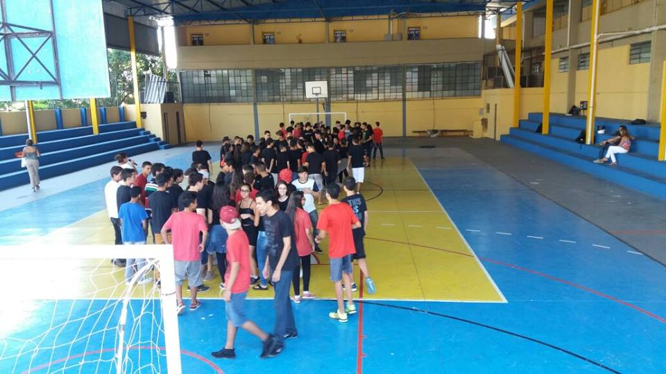

<!--
  Generated template for the NoticiasPage page.

  See http://ionicframework.com/docs/components/#navigation for more info on
  Ionic pages and navigation.
-->
<ion-header>

  <ion-navbar color="primary">
    <ion-title>Noticias</ion-title>
    <button ion-button menuToggle>
      <ion-icon name="menu"></ion-icon>
    </button>
  </ion-navbar>

</ion-header>


<ion-content padding #up>
    <ion-fab right bottom>
        <button ion-fab color="primary" (click)="scrollToTop()"><ion-icon name="arrow-dropup"></ion-icon></button>
    </ion-fab>
    <ion-slides pager autoplay parallax>
   
     <ion-slide style="background-color:transparent">
       <ion-card>
         
         <ion-card-content>
           <ion-card-title text-center>
             {{ obj_noticias.titulo }}
             </ion-card-title>
           <p>
           {{ obj_noticias.desc }}
           </p>
         </ion-card-content>
       </ion-card>
     </ion-slide>
   
     <ion-slide style="background-color:transparent">
        <ion-card>
          
          <ion-card-content>
            <ion-card-title>
              {{ obj_noticias.titulo1 }}
              </ion-card-title>
            <p>
            {{ obj_noticias.desc1 }}
            </p>
          </ion-card-content>
        </ion-card>
      </ion-slide>
   
   
   </ion-slides>
   <br/>
   
   <ion-list>
   <ion-card *ngFor="let Noticias of Noticias | async" (click)="OpenNoticiasdetalhes(Noticias.key,Noticias.titulo,Noticias.descricao)">
    <!--  -->
     <ion-card-content style="background-color: green;">
       <ion-card-title style="color: white">
        {{ Noticias.titulo }}
         </ion-card-title>
         <div flex="90" layout="column" layout-align="start start" layout-padding>
          <p style="height: 50px; word-break: break-all;word-wrap: break-word;color:gainsboro">{{ Noticias.descricao }}</p>
      </div>
     </ion-card-content>
   </ion-card>
  </ion-list>

  <!-- <ion-infinite-scroll> 
  <ion-infinite-scroll-content> 
    loadingSpinner = "bubbles" 
    loadingText = "Carregando mais dados ..." > 
  </ion-infinite-scroll-content> 
</ion-infinite-scroll> -->
</ion-content>
